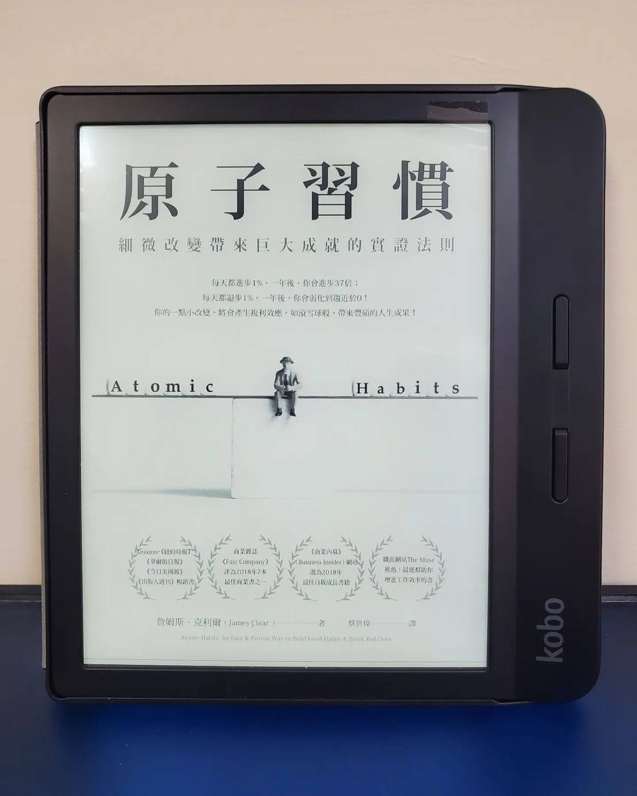

閱樂｜原子習慣
作者：James Clear

真不愧是蟬聯好幾年的暢銷書，名不虛傳！作者於本書中運用大量例子說明習慣養成的四大法則 (提示、渴望、回應、獎賞)，且給予許多實質的建議和公式，讓讀者有個明確的方法可以遵循。除了養成好習慣外，也進一步反轉四大法則，將之運用在壞習慣的戒除。值得推薦的五星好書！
習慣養成的四大法則： 📘 讓提示顯而易見 📙 讓習慣有吸引力 📘 讓行動輕而易舉 📙 讓獎賞令人滿足
一、基本原理
- 習慣的複利效應
- 想要造成有意義的差異，你必須維持一個習慣夠久，以突破停滯期
- 別管目標，而是專注於系統
- 改變分為三個層次：成果改變、過程改變、身分認同改變
- 改變習慣最有效的方法，是改變身分認同 (希望成為什麼樣的人)，並透過生活中的小勝利來證明，這是個回饋迴路。
- 習慣可以讓你騰出自由思考與創意所需的心理空間
- 習慣形成的四步驟：提示、渴望、回應、獎賞。
- 讓提示顯而易見，讓習慣有吸引力，讓行動輕而易舉，讓獎賞令人滿足。(若想要破除壞習慣，則可以反轉這些法則)
二、法則一：讓提示顯而易見
- 行為改變的過程始於有意識地察覺自身習慣：指差確認、習慣計分卡
- 執行意象：我會於 [時間]，在 [地點] 進行 [行為]
- 習慣堆疊：做完 [目前的習慣] 之後，我會執行 [新的習慣]
- 想要讓習慣成為生活的一大部分，就讓提示成為環境的一大部分
- 在新環境中比較容易改變習慣
- 一個空間，一個用途
- 打造一個有紀律的環境
- 要剷除一項壞習慣，最實用的方法之一就是減少接觸會激發此惡習的提示
三、法則二：讓習慣有吸引力
- 讓我們採取行動的，是對獎賞的預期，而非獎賞的實現
- 誘惑捆綁：做完 [目前的習慣] 之後，我會執行 [我需要的習慣] + 做完 [我需要的習慣] 之後，我會執行 [我想要的習慣]
- 社會常規的誘人拉力：模仿親近的人、模仿多數人、模仿有力的人
- 加入一個把你想要的行為視作常態的文化
- 若一個行為能獲得認可與讚美，我們就會覺得那個行為有吸引力
- 習慣是古老慾望的現代解決方案
- 與正面 (負面) 感受產生連結，習慣就有 (沒有) 吸引力。
- 創造一個動機儀式：在執行困難的習慣之前，做一件你很享受的事。
四、法則三：讓行動輕而易舉
- 精通習慣由重複開始，而非完美 (實行而非計畫)
- 習慣的養成取決於頻率，而非時間
- 最小努力原則：創造一個讓正確的事情盡可能容易執行的環境
- 兩分鐘法則：先從容易的事養成習慣、開頭儀式
- 承諾機制：用當下做的選擇來鎖定未來比較好的行為。
- 鎖定未來行為的終極之道，是將習慣自動化，可以善用科技
- 一次性選擇，例如購買更好的床墊，能讓未來的習慣自動化，而且其回報會隨著時間增加的單一行為
- 增加壞習慣的步驟，讓行動困難無比
五、法則四：讓獎賞令人滿足
- 立即的獎賞增加我們下一次重複該行為的可能性
- 習慣追蹤器與視覺化的測量方式：我們不喜歡中斷連續紀錄、就算中斷了也不要錯過兩次
- 可以測量一樣事物，不代表那就是最重要的東西
- 讓壞習慣的後果令人不滿
- 習慣契約與問責夥伴
六、進階策略
- 配合性格打造習慣，選擇最適合你的習慣，而不是最受歡迎的習慣
- 當你無法靠著「更好」來贏，可以憑藉「不同」勝出
- 金髮女孩原則：執行難度恰到好處的任務，可以維持動力
- 變動獎賞、愛上無聊：成功最大的威脅不是失敗，而是無聊
- 習慣的壞處在於讓我們不再注意到微小的失誤
- 習慣 + 刻意練習 = 精通
- 反省與複查是一個讓你對自身表現長久保持差覺察的過程
- 愈是緊抓一個身分認同不放，愈難讓自己超越這個身分成長